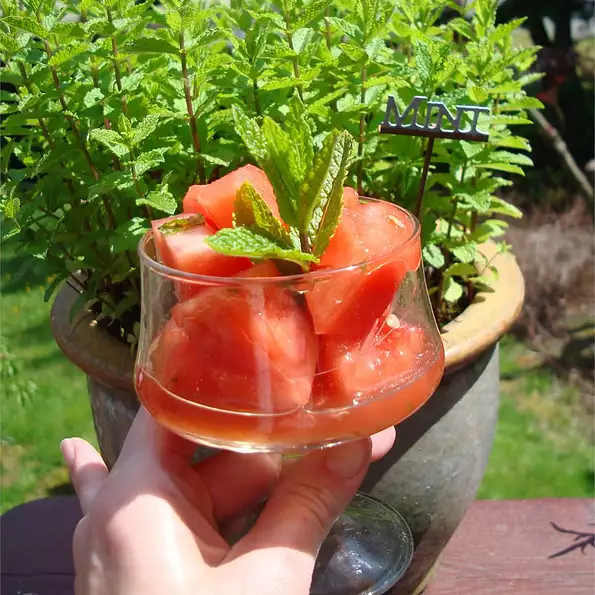

Watermelon

This is a simple summer watermelon recipe
Had half a watermelon in the fridge and wanted to try something new
Refreshing, fun summer party recipe! We really enjoyed this
Ingredients
- 1 large watermelon, cubed
- 1 cup vodka
- ½ cup white sugar
- 15 fresh mint leaves, chopped
Steps
- Toss the watermelon, vodka, sugar, and mint together in a large bowl
- Cover the bowl with plastic wrap and refrigerate 1 to 2 hours.